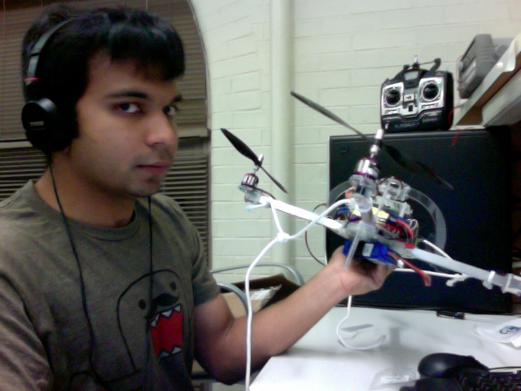

AMMAR HUSAIN
Welcome! I am Software Engineer at the National Robotics and Engineering Center at Carnegie Mellon University in Pittsburgh, PA. In 2012 I graduated with a Masters in Robotics Systems Development at the CMU Robotics Institute. My interests lie broadly in robot perception and machine learning. Prior to this I was an undergraduate student in engineering at the University of Illinois at Urbana Champaign. I have listed, on this website, the various projects that I have worked on during my time at CMU and UIUC. I was also fortunate to intern over various summers at General Electric and Merill Lynch.
Masters of Science in Robotic Systems
Robotics Institute
Carnegie Mellon University
Phone: (217) 819-9101
Email: ammarh -at- andrew.cmu.edu